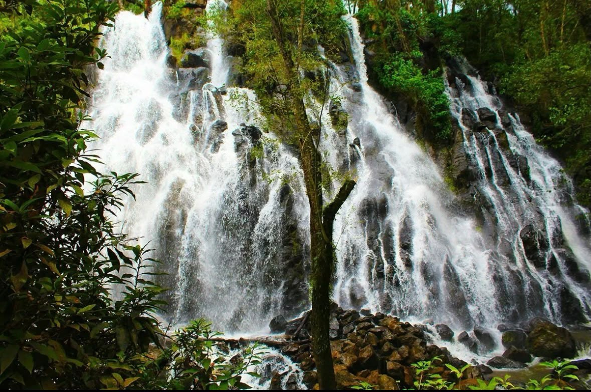
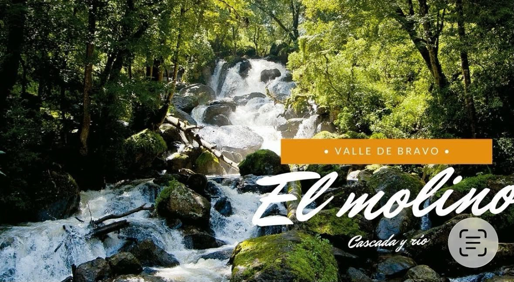

CASCADA VELO DE NOVIA

La Cascada Velo de Novia en Valle de bravo es un salto de agua aproximadamente 35m ubicado en Avandaro, con entrada gratuita y con horario de 6:00 a 18:30; se llega facimente desde el centro del pueblo en unos 20 minutos. Forma un velo blanco que le da nombre y crea un ambiente fresco y humedo entre los bosques de pinos y oyameles.
El sitio cuenta con senderos bien marcados, miradores y areas donde los visitantes pueden acercarse con seguridad a la base de la cascada. Es un lugar ideal para fotografias, caminatas y descanso, ademas de ofreser servicios como restaurantes artesanias y paseos a caballo en los alrededores.
CASCADA PIEDRA DE MOLINO

La Cascada Piedra de Molino,tambien conocida como El Molino,es una caida de agua mas discreta y tranquila,ubicada en los bosques montañosos que conectan Valle de Bravo con Avandaro.Su caida tipo "Cola de Caballo" se desliza suavemente sobre las rocas,rodeada de vegetacion abundante y un ambiente silencioso que invita a la contemplacion .
Es perfecta para quienes buscan un sitio menos concurrido y disfrutan del senderismoligero.El acceso es sencillo mediante caminos naturales que parten desde Avandaro, suele formar parte de recorridos que incluyen tambien la visita a Velo de Novia.
CASCADA REFUGIO DEL SALTO

La Cascada Refugio del Salto es una de las joyas escondidas de la región, con una caída aproximada de 15 metros que desemboca en un entorno boscoso y sereno. Para llegar se realiza una caminata de unos 20 minutos siguiendo senderos y el cauce del río El Molino, lo que añade un toque de aventura al recorrido.
Sus aguas claras y el ambiente natural la convierten en un excelente lugar para fotografía, descanso y contacto directo con la naturaleza. Es recomendada para quienes disfrutan de caminatas moderadas y buscan un espacio más silencioso que las zonas turísticas principales..